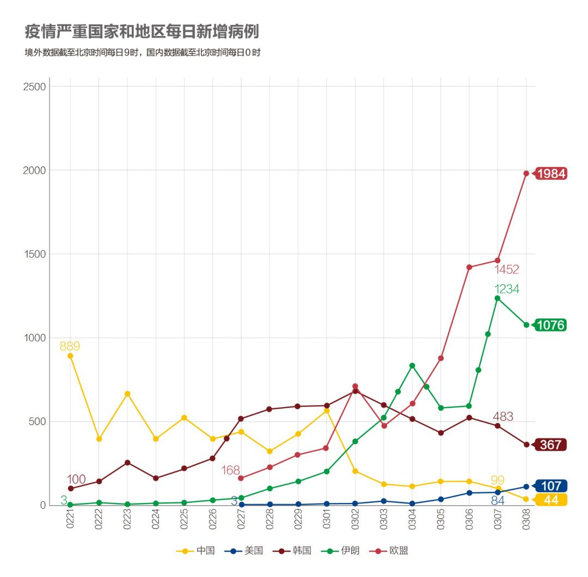
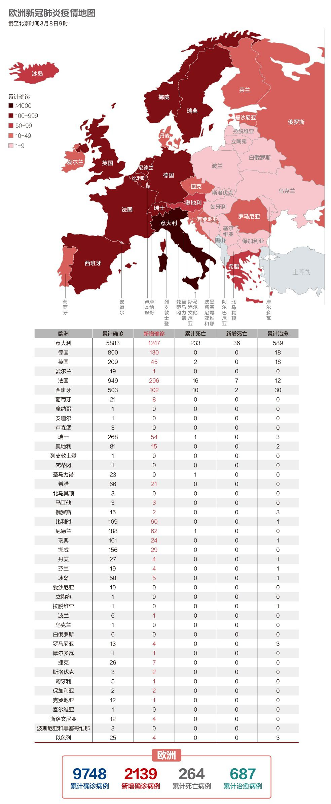
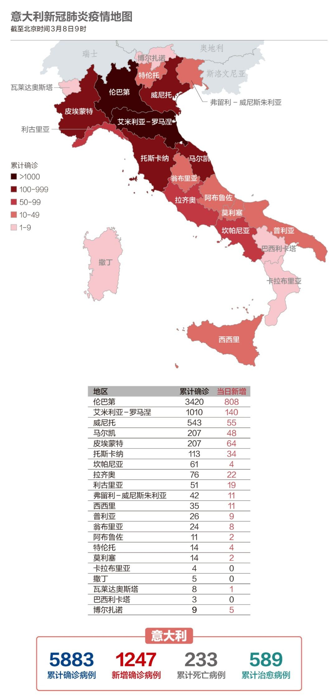

数说疫情0307：中国全力夺武汉，美国染疫州近半
原文链接 备份链接 国内31个省区市新增确诊降至两位数；全球累计确诊病例已破10万大关；意大利疫情最严重地区医疗资源已消耗殆尽 文 |《财经》数据研究员徐进 图 |《财经》视觉中心 编辑 | 郝洲 一、国内疫情防控形势继续向好，局面尽在 …

国内非武汉地区本地新增病例首次实现零新增，局面完全可控。韩国疫情得到初步控制；欧盟27国全部染疫；意大利扩大限流举措。
文 |《财经》数据研究员徐进 图 |《财经》视觉中心
编辑 | 郝洲
一、国内形势盼巩固，境外输入局面可控
今日国内简述：首先祝女士们节日快乐！特别要向战斗在“抗疫”一线的女士们致敬！国内3月7日报告新增病例44例。广大国内非武汉地区本地新增病例首次实现零新增。湖北非武汉地区连续三日零新增。湖北棋看三招，已开始通过发放“绿码”方式着手有序恢复省内交通，为接下来有序推进全面复工复产做铺垫。武汉新增病例降至44例，“趋零”开始倒计时！北京、兰州口岸境外输入病例3例，分别来自意大利、西班牙和伊朗，均不涉及本地社区。局面完全可控，应采取更积极姿态有序推进复工复产，恢复正常生活。
二、全球疫情进入加速状态
图1

伊朗和意大利的疫情丝毫没有好转的迹象，单日新增均过千。马耳他和保加利亚均首次报告病例，至此，欧盟27国无一幸免。几个多日来无新增的国家再次出现新增案例，例如越南、柬埔寨、泰国、阿富汗、俄罗斯等。
图2

为了避免让大家眼花缭乱，小编今天简化了此图，因政治地理关系将欧盟各国的数据累计展示在一条线里。欧盟的新增确诊扶摇直上，达到1984例，看来势不可挡。这里需要特别指出的是：韩国图像的头部和右肩似已明确，预示疫情快速扩张的势头得到控制。
三、美国华府首报确诊病例，口罩库存只够1%需求
图3

美国单日新增破百，至3月7日，共有30个州出现确诊病例，首都华盛顿也报出首例感染。纽约州州长科莫3月7日发表声明，宣布该州计入紧急状态。为应对美国国内医疗物资紧缺的状况，特朗普政府已经对从中国进口的100多种医疗产品（包括口罩、净手湿巾、检查手套等）免除了进口关税，美国医疗系统一年需要的N95口罩数量约为3.5亿只，但目前美国只有需求量1%的库存。
四、欧盟成员国全部染疫，意大利人口1/4限制流动
图4

不到一周时间，欧洲几乎无一幸免。马耳他和保加利亚昨日首次报告确诊病例。
图5

意大利政府3月8日凌晨公布新法令，规定从3月8日起，除工作特殊原因及紧急状况，禁止出入伦巴第大区及分布在威尼托、艾米利亚-罗马涅、皮埃蒙特和马尔凯大区的14个省。伦巴第大区首府米兰及威尼托大区首府威尼斯都包括这一区域在内。法令规定在这些区域内包括大学和幼儿园在内的各级学校停课，暂停游行、宗教、葬礼等人员聚集活动。此外，法令规定，意大利全国范围内的游行、演出活动停止，迪厅、游戏厅、赌场等人员聚集场所也将全部关闭。在酒吧及餐厅，也必须遵守保持人与人之间1米安全距离的规定。这一禁令将导致意大利全国1/4 人口被隔离，法令将持续到4月3日。
五、韩国新增病例持续下降，60%感染病例与“新天地”教会相关
图6

韩国的确诊总数突破7000，新增病例持续下降，疫情有望得到控制。在韩国政府的积极措施下，死亡率只有0.7%。韩国疾病管理本部长郑恩京指出，韩国72%的个案都是群聚感染，28.3%是零星个案，正在调查这些患者的感染来源。此外，在全国所有个案中，60%与“新天地”教会有关。
【特别说明：以上统计，2月28日前为世卫组织官方统计数据，数据截止时间为北京时间每日17时；从2月28日开始，数据由《财经》根据公开资料统计，截止时间为北京时间每日9时】
六、全球疫情数字速览
1、【世卫获2000万美元捐款】新华社3月8日称，中国政府决定向世卫（WHO）捐款2000万美元，作为推动国际合作抗疫。中国响应世卫呼吁，支持其发挥专业优势，在全球抗疫发挥协调作用，特别是协助公共卫生较差的中小国家。
2、【奥运或损失7.8万亿日元】日本三井住友证券公司估算，日本如果因新冠病毒取消举办东京夏季奥运会，可能会损失7.8万亿日元（约合743亿美元）。日本的GDP将下降1.4%。此估算基于一种假设：如果到7月，新冠肺炎病毒疫情仍未正常化，就有可能取消奥运会。
3、【硅谷12万名员工在家办公】疫情对美国的冲击越来越严重，苹果、脸书、微软、亚马逊、谷歌、推特等许多美国科技巨头也开始抗疫，纷纷要求自己的员工在家办公，远离硅谷和西雅图总部，总数约12万。
4、【60%农民工返岗】从国内各地监测的情况看，目前返岗复工的农民工达到7800万，占今年春节返乡的60%。从目前返岗复工的流向看，主要是长三角和珠三角。广东、浙江外省农民工返岗复工率达到70%，江苏外省农民工返岗复工率约60%。目前农民工返程复工正有序进行。
小结：国内非武汉地区本地新增病例首次实现零新增，武汉新增病例趋零进入倒计时，局面完全可控。加快复工复产、恢复正常生活已成为当务之急。美国各州已经开始积极行动起来应对疫情，但白宫行动迟疑，仍未拉响警报。欧盟27国全部染疫。意大利扩大“限流”举措。

▲点击图片查看更多疫情报道
责编 | 黄端 duanhuang@caijing.com.cn
本文为《财经》杂志原创文章，未经授权不得转载或建立镜像。如需转载，请在文末留言申请并获取授权。
原文链接 备份链接 国内31个省区市新增确诊降至两位数；全球累计确诊病例已破10万大关；意大利疫情最严重地区医疗资源已消耗殆尽 文 |《财经》数据研究员徐进 图 |《财经》视觉中心 编辑 | 郝洲 一、国内疫情防控形势继续向好，局面尽在 …
原文链接 备份链接 温州抗疫的“小目标”在变：1月29日是“奋战十天、拿下拐点”；如今是“力争到3月10日，企业复工率、产能恢复率达100%”。 本文 5464字，阅读全文约8分钟 文| 《财经》记者 王静仪 编辑 | 施智梁 2月初将浙 …
原文链接 备份链接 国内单日新增病例有望很快落到两位数，全国治愈率跨过60%节点。新冠疫情在海外大部分国家和地区（包括美国）还处于暴发的早期阶段。 文 |《财经》数据研究员徐进 图 |《财经》视觉中心 编辑 | 郝洲 一、 国内多地迎来 …
原文链接 备份链接 温州抗疫的“小目标”在变：1月29日是“奋战十天、拿下拐点”；如今是“力争到3月10日，企业复工率、产能恢复率达100%”。 文 | 《财经》记者 王静仪 编辑 | 施智梁 2月初将浙江省温州“小汤山”医院从无到有准 …
原文链接 备份链接 国内疫情即将进入扫尾期。今天，我们通过病、死、生三项数据，来为国内疫情做一个复盘 文 |《财经》数据研究员徐进 图 |《财经》视觉中心 编辑 | 谢丽容 郝洲 一、 累计确诊病例：全国总病例数有望控制在81000例左 …